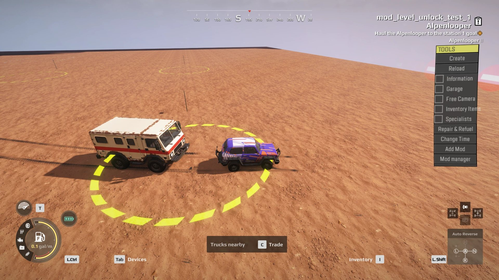
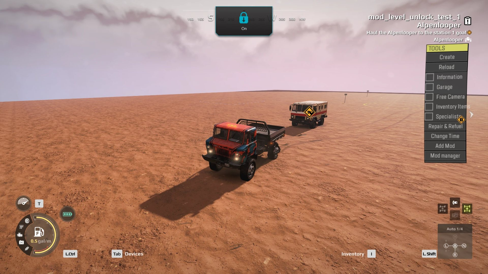
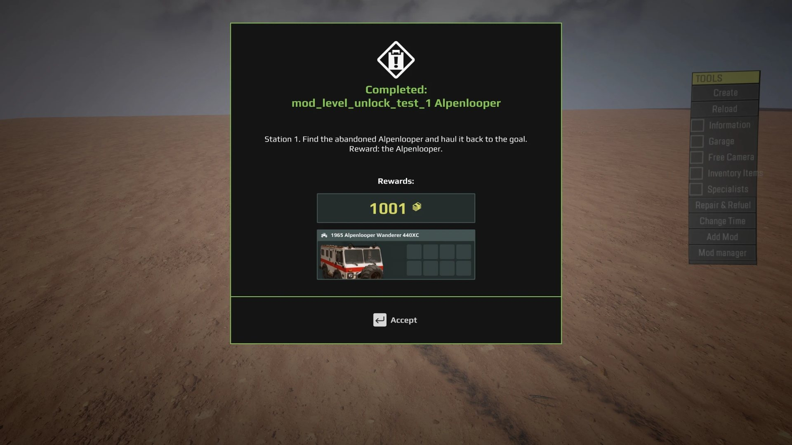
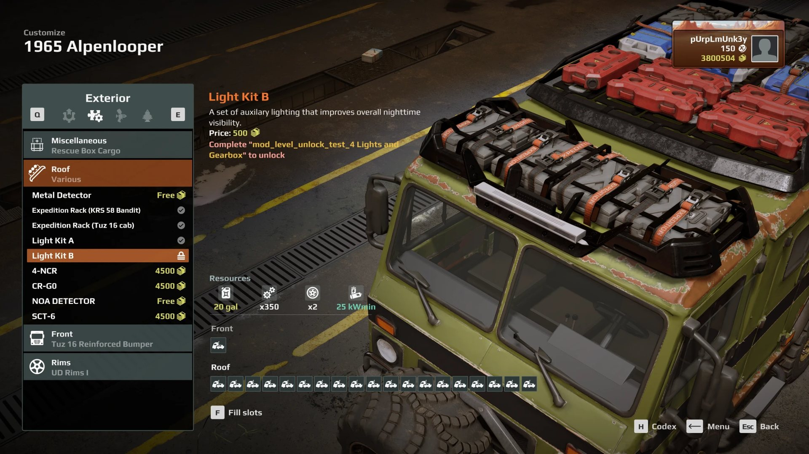
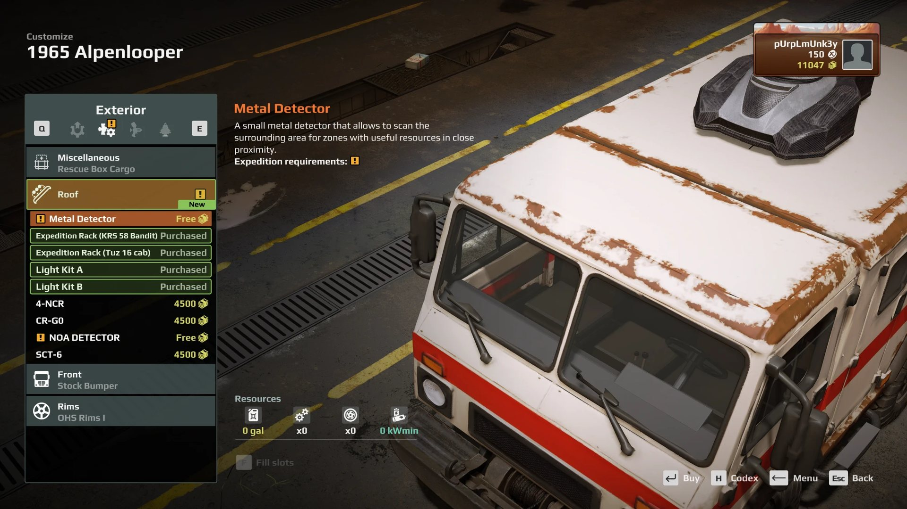

You can make a custom truck something the player earns: it sits in a barn on your map, the player drags it home, and only then does it appear in the truck shop. Its parts can then be earned one by one from tasks, contracts and expeditions. tested in game
All of this was run end to end on a small flat test map with a custom truck. A task hauled the truck home, then a task, a contract and an expedition unlocked every one of its parts. Two pieces are not documented anywhere and cost a test run each to find: the parked truck’s Id needs your map’s name in front of it, and a part the player already owns ignores its lock. Both are below.
Ship the map and the truck together
A lock is only ever opened by its own map. A player who has the truck mod but not the map can never unlock it, and Saber’s own packer refuses truck mods with locks for exactly that reason. documented Release them as a pair, and take the locks off before you delete a test map.
The two halves#
An unlock has a side in the truck mod and a side in the map. Neither works alone.
| what | truck mod side (its class files) | map side (the reward) |
|---|---|---|
| the truck | UnlockByObjective in its <GameData>, naming the objective (see below for the exact name) |
ObjectiveRewardUnlock, itemToUnlock = the truck |
| an add-on (rack, bumper, lights) | AddonUnlockByObjective="true" in its <GameData> |
ObjectiveRewardItem, id = the add-on |
| an engine, gearbox or suspension | AddonUnlockByObjective="true" in that variant’s <GameData> |
ObjectiveRewardItem, id = the variant’s Name |
This is the same pattern the base game uses: its objective-locked trucks name their task, and its 184 objective-locked parts are matched by 184 part rewards. measured
Writing the ids#
A custom truck’s ids carry its mod id on the end in the game, and the rewards have to use that form. Engines, gearboxes and suspensions are the exception. tested in game
| piece | write the reward as | example |
|---|---|---|
| the truck | <truck file name>_<mod id> |
mytruck_1234567 |
| an add-on | <add-on file name>_<mod id> |
mytruck_roofrack_1234567 |
| an engine, gearbox or suspension | the variant’s Name, no mod id |
mytruck_engine_tuned |
A save file shows the same split: custom add-ons are stored with the mod id, custom engines and gearboxes without. An add-on reward written without the mod id also worked in the test, but the mod-id form is the one the save uses.
The truck’s objective name#
UnlockByObjective takes the name the game saves the objective under, which is
mod_ + your map or region id + _ + the objective’s name. A task called Find the truck
on level_my_map is mod_level_my_map_Find the truck. The truck shop then shows the
truck with that name as its unlock condition. tested in game
The barn find: haul a parked truck home#
The objective is a truck delivery stage: the player brings a truck that is parked on the map to a zone. It is how the base game’s rescue tasks work.
- Park the truck. In the editor, right-click the map, Add Truck, and put it where the barn is. The editor’s truck list does not show custom trucks, so leave it blank, save and close the editor.
- Give it its type and Id in the tile’s
data/<col>_<row>/Truck.xml: -Type= the truck’s in-game id,<truck file name>_<mod id>-Id=mod_+ your map id +_+ the id your task uses - Write the task with a truck delivery stage naming the plain id, the zone to bring it
to, and
ObjectiveRewardUnlockfor the truck. - Pack the map.
The packed map spawns the custom truck where you parked it. tested in game
The Id needs your map’s name in front of it
The game adds the map id to the front of the task’s truck id when it tracks the delivery, but it does not add it to the parked truck. With a plain Id the two never match: the truck sits in the zone and nothing happens. Give the parked truck the prefixed Id and keep the plain one in the task. tested in game
The quick check: while the task is running, the parked truck carries the task’s marker. If it has no marker, the Id is wrong.



After the task completes, the parked truck is removed (afterStageFinished DESTROY,
as the base game’s rescues do) and the truck is for sale in the shop.
tested in game
Things that surprised us#
- “Locked” on a parked truck only means “until found”. The editor’s Locked switch stops the player using the truck until they reach it. After that they can get in and drive it. Reaching it does not open the shop; only the objective does. tested in game
- Once found, it stops spawning. After the player has reached the truck, a fresh load of the map no longer places it. Test on a new save each time. tested in game
- To make the player tow it, set its fuel to 0 and its damage high in the editor. untested
- The objective name shows in the game with
mod_<map>_in front of it, as every custom objective does.
Earning the parts#
Put ObjectiveRewardItem rewards on any objective or any stage, one reward per part.
A stage’s rewards are paid when that stage closes, so one expedition can hand out
parts as the player goes. In the test, parts unlocked from a task, a contract, an
expedition stage and an expedition finish. tested in game


Owned parts ignore their lock
A part the player already owns shows as unlocked whatever its lock says. In the test, a brand-new save showed nothing locked while the main save still owned those parts. Selling them in the main save brought the locks back in both saves, so ownership seems to count across save slots. tested in game Test locks on a profile that has never owned the parts.
Two more rules from the test:
- A truck’s own rack copies. If your truck uses copies of base-game racks, check their
AddonUnlockByObjective. A copy keeps the base game’s value, and a base-game reward will never unlock your renamed copy. - Parts that should need a rack. A truck’s socket cannot require a part, so to make a
drone carrier or a detector need a roof rack, give the truck its own copy of that part
with
<RequiredAddon Types="your_rack_a, your_rack_b" />. A comma list means any one of them, as the base game’s kung modules use it. measured
Doing it with the tools#
The AI toolkit does both halves from one plan file, so they cannot disagree. Run against the setup that worked in game, it finds every lock already in place and changes nothing. measured A map locked by the tool alone has not yet been played.
python build_objectives.py my_map.json --apply the objectives and rewards
python vehicle_unlocks.py my_map.json --mod 1234567 the truck mod's side, report only
python vehicle_unlocks.py my_map.json --mod 1234567 --apply
In the plan, a truck reward is "unlock": ["mytruck_1234567"] and part rewards are
"item": [...], on an objective or on a stage. vehicle_unlocks.py then:
- locks exactly the parts the plan rewards, and sets the truck’s objective name
- fixes each reward’s id form, and refuses an engine written with a mod id
- refuses a part that is locked but rewarded by nothing, since it would stay locked forever
- gives a parked haul truck its map-prefixed Id, and with
--truck-typefills in a blank truck’s type - backs up the truck mod once before it first changes it
A minimal plan:
{"region": "level_my_map",
"objectives": [
{"name": "My Map Free Roam", "map": "level_my_map", "free_roam": true},
{"name": "Find the truck", "map": "level_my_map", "kind": "task", "giver": "barn_sign",
"stages": [{"truck": [{"truck": "barn_truck", "zone": "yard", "after": "destroy",
"text": "Haul the truck home"}]}],
"unlock": ["mytruck_1234567"]},
{"name": "Kit it out", "map": "level_my_map", "kind": "contract",
"stages": [{"visit": [{"zone": "depot"}]}],
"item": ["mytruck_roofrack_1234567", "mytruck_engine_tuned"]}]}
Still open#
- Whether a tow-only barn find (fuel 0, heavy damage) behaves as expected.
- Where the game shares part ownership between save slots.
- Unlocking through Saber’s Upgrades Giver zone (a zone that hands over one part when reached) instead of an objective reward. documented, not tried with a custom truck.